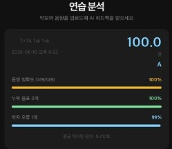
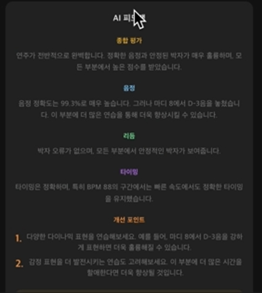
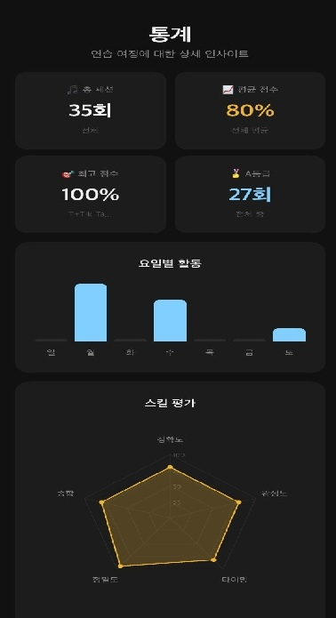
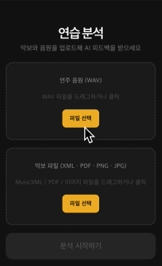
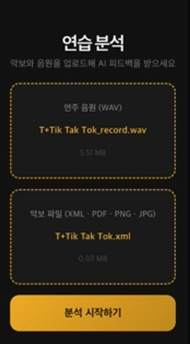
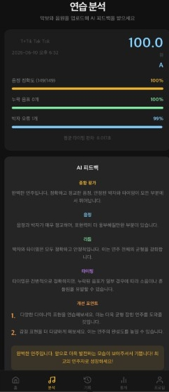

딥러닝 기반 음원 분석 및 맞춤형 피드백 제공
MusicXML 악보 분석 × 딥러닝 음원 인식
→ 자동 채점 및 AI 맞춤형 피드백 제공
캡스톤 디자인 7팀
기존 방식의 한계
본 과제의 목표
딥러닝 기반 음원 분석 기술을 활용하여 사용자의 연주 데이터를 자동 분석하고, 악보와 비교하여 오류를 검출하며 맞춤형 피드백을 제공하는 시스템 개발
교사 없이도 즉각적이고 객관적인 연주 피드백 수신 가능
연습 이력 시각화를 통해 학습자가 자신의 성장 과정을 직관적으로 확인 가능
다른 악기로 분석 범위 확대 (현재 피아노 전용)
CPU 기반 오디오 전사 속도 개선 → GPU 서버 환경 최적화
메모리 기반 세션 스토어(TTL 5분) → Redis 등 영구 저장소 도입
악보 없는 자유 연주 평가 및 연주 스타일 분석 기능 추가
실시간 연주 평가 지원
React 프론트엔드
파일 업로드 / 채점 결과 표시 / 피드백 카드 / 연습 통계
Go 백엔드 서버
POST /api/analyze | GET /api/feedback/stream (SSE)
Python 분석 파이프라인
Module 1~4 순차 실행 → JSON 결과 반환
music21 라이브러리로 MusicXML 파싱
정답 음표 추출: 음정, 시작/종료 시간, 속도
piano-transcription-inference 딥러닝 모델로 WAV 분석
PyTorch 기반 / BPM에 맞춰 타임 퀀타이즈 수행
정답 음표 vs 연주 음표 비교 채점
화음 그룹 매칭 / 타이밍 오차 허용 (±0.2초)
누락·오타·추가 음표 구분 → 0~100점 산출
Ollama — Qwen 2.5-1.5B Instruct (로컬 LLM)
채점 결과 기반 음정·리듬·타이밍 항목별 피드백 및 개선 팁 생성

딥러닝 음원 분석 후 즉시 점수와 등급 표시 (A+~C, 7단계)
채점 항목: 정확한 음표 수, 누락 음표, 박자 오류, 평균 타이밍 편차
정확도 / 누락 음표 / 박자 오류 바 차트로 시각화

Qwen 2.5 기반 항목별 텍스트 피드백 및 개선 팁 생성
종합 평가 / 음정 / 리듬 / 타이밍 / 개선 팁 / 격려 메시지

연습 이력, 점수 추이 그래프, 16주 히트맵 자동 저장
레이더 차트, 요일별 연습 분포, 성취 뱃지 제공

분석 탭으로 이동
MusicXML 악보 + WAV 음원 업로드

분석 시작 클릭
점수·등급 표시

AI 피드백 확인
음정·리듬·타이밍 항목별 피드백 카드
기록·통계 확인
점수 추이 그래프, 히트맵, 레이더 차트
동영상을 여기에 삽입하세요
<video> 태그 또는 유튜브 iframe으로 교체 가능
질의응답 시간을 가지겠습니다
문의: LEEjy0431@github.com